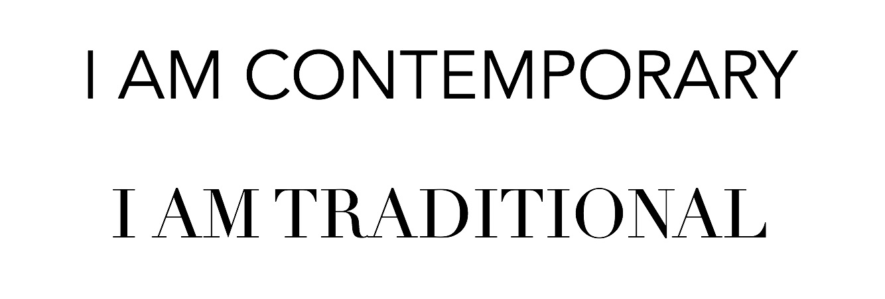
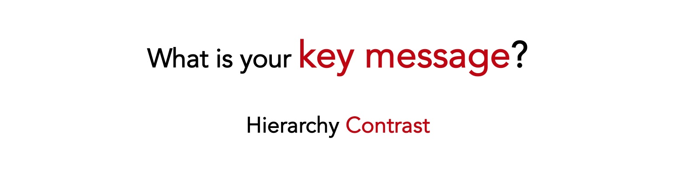

Why is it useful to give good talks?
As scientists you will give talks. Presenting your work:
- helps other scientists to know about, use and cite your results
- helps other scientists to remember you and trust your work
- helps to establish new collaborations
- helps to develop new science objectives
- helps to get a grant/job
- helps to tell your story and your vision
What You'll Learn
- how to adapt your talk to your goal
- different parts that make up a talk (story line, design, text, images, voice)
- tips on how to improve each of these aspects in a presentation
- reconsider some misconception
What You'll not Learn
Negative : ⚠️ I am not a professional communicator, I am a scientist. This tutorial is based on what I learned as scientist, after giving and listening to talks, studying tutorials, talking to professional communicators. Some choices can be personal. This tutorial cannot teach you how to make a great presentation. However it can help you to avoid making a very bad one.
Acknowledgments
Material contained here is based on:
- Professional experience
- Feedback I got from people over the years
- Coursera Presentation Skills Specialization by Alexei Kapterev that I attended
- Lectures on spoken communication by Prof. Massimo Pettorino
This tutorial is mainly meant for scientists, but several tips can be useful for other types of talks.
About the author
I am a physicist at Cosmostat, CEA Paris-Saclay. That's me: https://www.valeriapettorino.com/
Set your goals
The first step into preparing your talk is identifying what are your objectives: are you applying for a job, looking for a new expert collaboration, giving an outreach talk to the public, are you teaching, do you want to learn something yourself?
Positive : My tip: set a goal first, then adapt your slides/tools to that goal.
My personal goals for this tutorial:
- transfer knowledge: share with you what I have learned so far
- learn how to prepare a codelab tutorial
- contribute to Lab activity
- prepare this tutorial in one week
- make it suitable to share, also without me explaining it
What you are saying is not important ‘per sé': it becomes important if someone listens. It's in your interest to help your audience! If you know your audience, and what their expectation is, you can better target your talk and manage attention.
Who are you talking to?
- One person üíÅ
- Panel üë§üë§üë§üë§üë§
- Large audience üë§üë§üë§üë§üë§üë§üë§üë§üë§üë§üë§üë§üë§üë§üë§üë§
- Expert in your field üéì
- Expert in another field üéì
- Students üìö
- General public üêºüêØüêëüê•üê¨üêô üê°üê∂‚õÑ
What is their expectation?
- Learn about your work
- Learn about the state of the art
- Learn about how you are using a tool they developed
- Make an evaluation
- Find a new collaboration
Depending on the situation, you may have to compromise between your goal and your audience expectation.
Value your audience effort
In most cases, people in the audience:
- walked to a seminar room or connected to a link
- had to interrupt their work
- are spending their time to listen to you rather than doing something else
- may have been asked to attend your talk
Negative : When you start, the audience is thinking about many different things. They all have to start thinking about the same thing. They have to start thinking about what you are thinking. It's strange if you think about it. Not easy.
In the next section you will find examples of talks aiming at different goals and audiences. Before reading further, can you think of how would you adapt your talk to the following use cases? How are they similar and how the following talks will differ? What should you focus on? What would you rather not do?
- 1h Lecture
- 20 m presentation to a committee panel
- 40 m scientific seminar to experts in your domain
- 1h colloquium
- Public outreach talk (ex. TED)
⚠️⚠️⚠️⚠️⚠️⚠️⚠️⚠️⚠️⚠️ WAIT BEFORE READING FURTHER ⚠️⚠️⚠️⚠️⚠️⚠️⚠️⚠️⚠️⚠️
Below you find a possible description of each of the following use cases:
- 1h Lecture
- 20 m presentation to a committee panel
- 40 m scientific seminar to experts in your domain
- 1h colloquium
- Public outreach talk (ex. TED)
1h Lecture
Negative : Goal: teaching
✅ Define everything and start from basic concepts
✅ Simplify communication as much as possible
- talk slowly
- go step by step
- make your design very readable
- maybe use images
- examples
- repeat the same concept several times✅ Adapt to feedback
- Ask questions to your students
- Ask for questions from your students
- May decide to explore less/more topics
✅ Consider interactive tools, live exercises, video.
✅ You may include some historical note on past attempts/developments
❌ You won't typically focus on your specific research
⏰Time: Density of topics will be flexible, not really important to cover all topics within the 1h lecture.
20 m presentation to a committee panel
Negative : Goal: get a job. Your aim is to convince the panel that you are the best person for that position.
The committee will be asked to compare the story of each candidate. The talk is your chance to give your version of your story*
✅ why you are a good fit
✅ what is your specific contribution to science to far
✅ your responsibilities
Convince them that you can:
✅ explain clearly what you know
✅ value what they know
✅ be useful by providing something they don't know
❌ You are not teaching
⏰ Very efficient, it has to fit 20m:
- 5m introduce yourself and the timely challenge in your field that needs you to be solved;
- 10m your highlights and how you fit and complete the expertise of the group. Demonstrate how you and the group, together, will reach your common timely goal;
- 5m propose a joint project, give your vision of the future, on a short/long term timeline.
Positive : My Tip: make sure you check the website of the group, understand what they do, and how you can fit in. Read the application opening, it may contain hints and keywords that you may want to recall.
40 m scientific seminar to experts in your domain
Negative : Goals: communicate your research results, make other scientists want to read, understand, use, your results; start new collaborations to develop your idea/results further; have them cite your papers.
✅ Pick a specific new paper you wrote or result you obtained
✅ Give the context / motivation for your paper to exist
✅ Illustrate your new idea / implementation / result
✅ Clearly add the arxiv number of your paper to the slides
✅ Mention potential developments, targeted at the audience expertise
⏰ Take the time to explain the idea, main results, describe a scientific plot in detail.
Positive : My Tip: think of enhancing contrast. How does your method and result differ from what other people have done? How did you advance the state of the art? Show that you are aware of other people work, cite them. Be aware in particular of whether your audience may have already worked in that field.
1h colloquium
Negative : Goals: explain main challenges in your research field to a varied audience, including experts in other fields and maybe a few experts in your field. Demonstrate that you can explain your field in a simple and comprehensible way, but also that you can contribute to that field as an expert. Show that you have a vision of where this field is going and what it requires to be further developed.
✅Give the context, with a very general introduction that everyone can understand (~15 m)
✅Describe main challenges in the field, not necessarily related to your work only (~10 m)
✅Describe how your work fits into addressing these challenges (~10 m)
✅Describe one result you got (~ 10 m) (for the experts in your field, otherwise they will be bored)
✅Describe potential developments in this field (~10 m) (for everyone)
✅Conclusions with your short and long term vision of this field (~5 m)
❌Not focused on a specific paper you wrote.
Positive : My Tip: slightly increase the difficulty as you proceed. Not everyone has to understand everything at all times: take a few minutes to talk to experts as well or they will get bored if the level is too low for the entire 1h; however at least the first half and the last part have to be again entirely comprehensible for everyone.
Public outreach talk (ex. TED)
Negative : Goal: inspire
✅ Adapt design to a large and non expert audience
✅Very little text
✅ Story telling may involve more twists
✅ Voice
✅ Body language
✅ Larger images
✅ Videos
❌Equations
❌Baby-talking
Positive : My Tip: don't underestimate your audience. They may not be expert in your field, but each of them will have a talent, and their own expertise, about which you will typically know very little. Show that you can explain complex concepts clearly; try to avoid over-simplified wrong analogies: ultimately they typically only call for more questions that you won't be able to answer. While simplifying, give also a hint of the complexity of the field you are discussing. Science can be clear, but it's not easy.
Identify the location and which tools you have available
- Small room
- Large auditorium
- Remotely
- Laptop screen
- Large screen
- Without a screen
- Can you show images, videos?
- Do you have internet connection?
- Do you have a microphone?
Positive : My tip: if you can, it is advisable to enquire with the organisers before your talk.
How long can your talk be? How much time do you have to prep?
It will be a compromise:
- maybe you won't have time to check everything
- maybe you have been instructed not to spend too much time preparing
- maybe you have a job interview and you want to give the best talk.
The more you get confident with choices you have, the more efficient you will become in reaching your goal without wasting time.
Negative : Important: if you are given X minutes, you have to reach your conclusion in X minutes.
✅Ask in advance.
✅Decide in advance how long you can spend on Introduction / Development / Conclusions.
✅Check the time during your talk to make sure you can adapt.
✅May ask for a warning 5 minutes before.
✅Give up on saying everything.
❌Complain about lack of time.
❌You are still in your Introduction after > X/3 minutes.
❌Time is up so I'll talk faster.
❌Time is up so I'll go fast on all the remaining 20 slides. If you are 5 minutes from the end and you still have several slides, going fast through plots/slides/caveats won't help, it just makes the audience more aware that you screwed up your talk. It shouldn't happen, but if it does, keep control, skip slides entirely and just say your final message. Make sure the audience understands at least that.
❌Chair tells me time is up but I'll continue anyway.
Positive : My tip: define at the start how much time each part of your talk should last and how many slides per topic you can have. Share your time across slides. You want to avoid having the first 5 slides which are brilliant, and the quality going drastically down afterwards.
What do you want people to retain from your talk?
What are your keywords? Identify:
- what you want to say
- what you don't want to say
and make sure you explicitly give your message at the start, at the end, and whenever possible also within your talk.
Story telling
A standard outline would typically include: introduction, build-up and conclusions.
Introduction
This is the part where you have to first capture attention.
- Explain in one sentence what your talk is about and what you are aiming at
- What is the problem you want to address?
- What is the state of the art?
- Introduce characters (main keywords, topic)
- Cite other people work: it's good and fair to give credit
❌Try to avoid very long sentences: you need to capture the attention now, not at the end of 100 words.
❌Avoid unnecessary citations (usually it's more interesting to know what you think than what someone else said, who knows when and who knows in which context).
Development and build-up
- Characters evolution: new idea, a new approach
- Describe your results (examples, data, plot(s))
- Make it interesting
- Did you encounter new problems along the way, you didn't expect?
- Was there a twist? ex. after your first attempt, you discussed this with someone and found out that in neuroscience a similar problem is present.
- Test attention and adapt to your audience: from time to time, recall what happened until that point, before moving to the next part
Conclusions
- Give your key message again
- Highlight contrast: in which way the ending of this story differs from the beginning?
- what did you learn along the way?
- are there new open questions?
- what works now that didn't work when you started?
- did you acquire new skills?
- did you release a new code?
❌Don't conclude just because time is up. Enjoy your conclusions!
Positive : Tip: transfer your enthusiasm!
Jokes
Fun can be good but is it funny?
Awkward situations you'd want to avoid:
❌As a speaker: you say a joke and laugh by yourself.
❌As an audience: laugh at a joke you recognise as bad, just to please the speaker.
Jokes can be:
- very culture dependent.
- high risk for little gain.
Negative : Bad jokes: in a professional context, anything that may involve sexuality, gender, race, ethnicity, nationality, ability/disability, alcohol/drugs, violence, and in general humiliating colleagues, students, groups of people, topics for which entire communities are highly affected.
Potentially good jokes: maybe some physics jokes / witty puns if it doesn't fall in the bad category (?) If you try, and someone gives you negative feedback, listen to them, apologise and try something else in the future.
Positive : My Tip: remember that you are not giving the talk to yourself. You are talking to people, with their professional and personal histories, culture, beliefs, difficulties, of which you typically know very little. If in doubt, just avoid it. There are other ways to make your talk more fun: consider instead playing with design, voice and your story telling.
How do you make your talk functional and interesting? How do you capture attention?
‚úèÔ∏è Text üìà Images üí¨ Speech
Audience will be mixed: some will hear what you are saying, some will prefer to read, some will concentrate on plots and visualisations. To reach everyone, you'll typically include all three of these elements. You will use your voice, you will leave the time to read some text, you will use a plot to illustrate your results.
Let's look at some tips to use your voice and design your slides.
Positive : Priority: is functionality. Plus fun, cost-effectiveness and professional look.
When reading, text gives the main message. When speaking, things are much more difficult. Text is only a small part of your message.
Negative : People may not remember anything of what you said, but will tend to remember how you said it.
Sometimes we think we said something but the message we gave was actually different. Many parameters contribute to your message.
Example: A: "Yesterday I ate a risotto"
B: "Oh, How was it?"
A: "Good."
Prosody
Prosody does not refer to the text you pronounce but to how you say it.
Volume/intensity
can be high or low: it is related to how much air you use when you speak.
Negative : The audience has to be able to hear what you are saying.
✅ Pick a person who is far away and talk to that person
❌ Don't talk to yourself
Intonation
You can use a higher or lower pitch. Tone is related to contracting a muscle, the more tense it is, the higher the tone, like for a guitar.
❌avoid speaking always with a flat intonation.
Speech rate: (syllables/s)
- very fast (you don't want too much attention, medicines side effects are 9 syllables/s)
- slow (baby-talk, 3 syllables/s)
- talking live or remotely requires also a different speech rate
❌avoid speaking always at the same rate: enhance contrast between what is more important and what is less important.
Silences
Have no fear of silences.
- They can be used to emphasise something.
- They can be used to give the audience the time to think.
- Be aware of them, otherwise they become hesitations.
- Silent pauses
- Filled pauses: pause in which there is no silence.
Disfluencies
- filled pauses, vocalisations (eee, oooo)
- nasalisations (mmmm)
- repetitions (repeat a word),
- false starts (start, then adjust sentence while speaking)
- lengthenings
Are you aware of which one do you do? Try to be aware of them, and possibly reduce them.
Negative : Note: despite their name, they are not really a bad thing. They are part of spontaneous speech so it is normal (and good) to have some of them, it shows that you are thinking and not reading.
Positive : Tip: Try to vary some prosodic elements during your talk. Do not read your slides word by word. Give it your rhythm.
Positive : Tip: prepare your talk in advance, loud voice. If possible register yourself and review it afterwards to help you improve.
Dominant or not?
Your voice will contribute to identify yourself in a role which is somewhere between dominant and sub-dominant.
Dominant: slow, many silences, thinking a lot about what you don't want to say; it can show confidence but also puts distance with your audience. Not advisable at the start of a talk. It may give the idea that you think you are in a higher role (and it may look like you put the audience in a lower role).
Sub-dominant: fast, many things to say, few silences.
Body language
- Regard: look at the audience (ex. to all committee panel members)
- Preferably not sitting (removing body language)
- Moving is ok. However don't move all the time, it's distracting.
- Comfortable position, calm and ready to say things that you believe are important.
- Easier to feel comfortable if you manage to arrive rested, after a good sleep.
Here are a few exercises using your voice.
Exercise 1.
Read the numbers choosing one intention among the ones in brackets:
12 34 23 75 (disgust, enthusiasm, resignation)
4 5 7 9 2 (sadness, fear, satisfaction)
Exercise 2.
Pronounce ‘Good morning' with different intentions and ask someone to guess which intention you sent.
- hasty
- happy
- sad
- threatening
- afraid
- insincere
- commanding
- enthusiastic
Exercise 3.
Read this text
- First following syntactic silences (, . ;)
- Re-read with higher tone or emphasis on words in bold
Massive neutrinos influence the background evolution of the Universe as well as the growth of structure. Being able to model this effect and constrain the sum of their masses is one of the key challenges in modern cosmology.
Massive neutrinos influence the background evolution of the Universe as well as the growth of structure. Being able to model this effect and constrain the sum of their masses is one of the key challenges in modern cosmology.
Massive neutrinos influence the background evolution of the Universe as well as the growth of structure. Being able to model this effect and constrain the sum of their masses is one of the key challenges in modern cosmology.
Exercise 4.
Try to pronounce the following sentence using one of the intentions listed below.
We'll talk about that tomorrow
- sad
- enthusiastic
- threatening
Exercise 5.
The teacher said the detective is French.
Who is French? The teacher or the detective?
Changing pauses: The teacher said // the detective is French.
The teacher // said the detective // is French.
Changing intonation (without pauses):
The teacher said the detective is French.
The teacher said the detective is French.
The teacher said the detective is French (i.e. not a third person).
Negative : Goal comes first: design can help you in reaching your goal; it is not just about making something look pretty per sé.
Positive : Design is planning
Hierarchy
What's the most important thing you want that slide to say?
What's the second most important thing?
How much information do I need to say?
Contrast
How are they different?
What can I delete?
- Unnecessary words
- Excess decoration
- Elements which are not needed to make a decision
Further reading:
- Designing presentation slides https://www.coursera.org/learn/slides
- Introduction in The Truthful Art: Data, Charts, and Maps for Communication (Voices That Matter), by Alberto Cairo
What doesn't work with the slide below?

- ‘Too much text' is not the main problem.
- ‘Font size is too small' is also not the main problem.
Negative : The main issue is lack of hierarchy and contrast.
❌No Margins or white space
❌All main text
❌Different fonts
Let's see how we can improve it to make it more readable, even without removing text.
I can start by identifying what I want the audience to see first:
I can increase contrast between what comes first and what comes afterwards:
- increased what comes first (now 22 font size, originally 20)
- decreased what comes second (now 14 font size, originally 20)
- organised it in columns rather than in lines across the whole page
- increased white space and margins
I can use icons and make it more fun. I can increase contrast further within the text, with bold/grey.
Positive : It took very little time to go from a very bad slide to one which is more readable: I did not change the text, I decided a hierarchy and enhanced contrast between items in that hierarchy.
I can further reduce text if I wish, but the main issue was not ‘too much text'.
Icons made by Freepik, Nhor Phai, Icongeek26 from www.flaticon.com
How much text?
Not enough
- Slides don't work without the speaker
- Speaker forgets what to say
Too much
- Main point is obscured by irrelevant details
- Main point is obscured by irrelevant details
- Main point is obscured by irrelevant details
- Main point is obscured by irrelevant details
Typically you will have more text for an audience with high expertise or in small locations; less text for an audience with low expertise or in a large auditorium.
Font
Negative : Pick something readable
Design changes over history: when you choose a font, implicitly you are also giving a message.

Sans-serif: less contrast, more contemporary, more geometric, more readable in slides.
Serif: more contrast, hints to tradition, history, sophisticated, emotional, closer to hand-writing. Usually less readable in slides with a lot of text.
- Plots
- Icons
- Photos
- Animations
Plots
Negative : A plot should be there for a reason, to explain and demonstrate your results. It should come with its interpretation and with your explanation.
Take the time to describe and explain your plot.
✅Describe: guide the eye of the audience through the plot: they have never seen it before! Go from outside to inside. What do you want the audience to look at?
✅Explain: why is it important? What's the message? If you can't find one, then you typically don't need the plot at all.
❌Unnecessary items (grids, boxes around legend, background shading...)
❌ Filling your slide with invisible plots. One visualisation is usually enough.
❌A plot is not a photo or an icon. It's not there to make your slides nicer, it's a visualisation of your results.
Positive : Make the plot large enough to actually be seen in all its parts. Complex plots require time for them to be explained. If you don't have the time, remove the plot.
Icons
Icons can be found online: https://www.flaticon.com/
They are meant to be small and can be nice when used for itemising (instead of bullet points).
Usually the smaller the better, as they don't have many details.
Photos
Photos can be found online: https://freerangestock.com/ or you can use your own and make it more personal.
Photos can be used to highlight the title and main topic of the slide.
The larger, the better.
❌Avoid images at the bottom right of the slides: we tend to look from left to right and top to bottom. It looks like a patch on a slide which was already made.
❌Avoid illustrations that mimic a situation: hard to have the audience feel empathy for such a situation.
Positive : Tip: try to use photos which are dark or light enough for text (if any) to be visible on top. You can add a semi-transparent layer to make your text more visible.
Animations
Some people like them very much, some other really don't.
They can be cool if they are high quality and you know what you are doing. Otherwise, I would avoid them.
Either there is a point to them, in making your message clearer or more fun, or they can distract the attention, especially in transitions.
Positive : My tip: keep it simple and functional to your message.
There is no need to use all available colours just because they exist.
It has to be readable.
✅ dark background with light foreground
✅ light background with dark foreground
üî•Warm vs cool ‚ùÑÔ∏è
Colours can have a general meaning, besides the one given by context.
Reference: https://blog.indezine.com/2011/10/how-to-avoid-four-biggest-powerpoint.html
Reference: https://24slides.com/presentbetter/pick-right-colors-presentation/.
Complementary colours are not necessarily a good choice:
If you don't have a style guide provided by your institution, and you are not an experienced designer:
Positive : Tip: pick your favourite primary colour. Then select the others using a colour matching website. Avoid using more than 3-5 colours.
- Color explorer: color matching generator.
- [Online palette generator: https://coolors.co/]
Negative : Templates often add unnecessary elements, heavy background or headers, logo which is too big, wrong colours, poor typeface, ...)
Further reading:https://blog.indezine.com/2011/10/how-to-avoid-four-biggest-powerpoint.htmlhttps://24slides.com/presentbetter/pick-right-colors-presentation/
How are they different?
- No body language
- Hard or impossible to look at your audience
- Very little feedback
- More difficult to adapt to your audience
- More difficult to manage attention
- Need to talk more slowly (delays, overlap, can be hard to hear)
- If you just talk, you end up talking to yourself (which spoils the whole essence of giving a talk!)
- Slides format is different (small screen, low resolution, delay, no pointer)
- Images, videos, plots will always appear small and won't have the same impact
Much more difficult for both speaker and audience to manage and keep the attention. If you give a talk online as you would give it live, there is a high chance it won't be effective.
Positive : Tip: given that body language is absent, try to concentrate at least more on the voice, on silences, intonation, speed rate.
Negative : Should we just record the talk, send it in advance, and then have only the interactive part live? Ex. Q&A on the recorded talk.
- Why: adapt your talk to your goal
- Who: help your audience to listen
- Where: location

- How:
- slides (text, font, images)
- story line
- voice (prosody and intent beyond the text)
- unless you really know what you are doing, keep it simple (excessive decorations, animations, transitions, content, plots, etc): can be very distracting and if you over-do, you can obscure your main message.
Negative : Talk to your audience, not to yourself.
Positive : The best way to improve your talks is to give talks! Accept invitations to give a public speech and listen: pay attention to what you liked in other people talks and why you liked it. Then try it yourself!